本站首页
中医简史
中医特色
中医常识
中医刮痧
中医新闻
中医简史
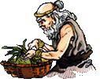
相传远古时代有两位传奇人物，
黄帝与炎帝(又名神农)。
历史学家虽不能确定他们是否真正存在，但可以确定他们的年代大概是公元前2500-2700年。两人都被认为是
中医药始祖
之一，对中医药贡献良多。
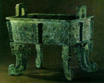
商人民居住在中国境内的黄河盆地，被认为是中国最早的祖先之一。他们行医的方式非常原始，往往将迷信、传说及治疗经验结合应用。据当时出土的水牛及乌龟甲骨文记载，
已有数种疾病的描述和治疗方法，人们更以酒及热水作药物，利用针及青铜刀作手术用具。相传以汤液治病始自此期。
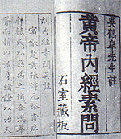
周朝医药当比商代为进步，但皆集中在王宫，并已有制度。根据
《周礼》
的记载，东周时期已存在有系统的医疗组织，宫廷医师需接受不同的专科训练，例如疾医负责疾病治疗工作，属现代医学的
内科
，疡医负责治疗
疮伤、皮肤病、骨折或其他创伤
，食医负责王宫内饮食调配，相当于今日的
营养师
。
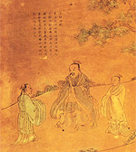
《神农本草经》
是汉代的重要著作，中国处于农业社会，是以产生治病的本草记录，并以植物 为主。此书是后人托名
"神农"
之作，成书时间不详，估计约在公元前1或2世纪，
是中国最早期的完整中药学文献
。
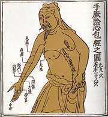
王叔和
(公元265 ~ 317年)是魏晋间的名医，所着的
《脉经》
集古代诊脉法的大成，并结合自己的临床经验。此书定脉象为24种如
浮、滑、沉、弱
等并有简明扼要的叙述。以动脉搏动的深浅、快慢、强度、节律及脉波形态等诊断病情及考察疗效。
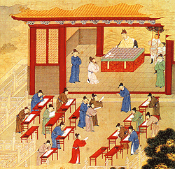
巢元方
是一位太医博士，即是皇帝的医师。公元 610年，巢被隋政府指派编写
《诸病源候论》
又称
《巢氏病源》
。这书共 50卷分67节，论述了 1,700种病症。它是一部重要的著作；反映早在隋代就对病源的探讨，发病机理的分析，以及对症候的描述方面，有了相当深入、系统地探索，
是中国最早的病因证候学记录
。
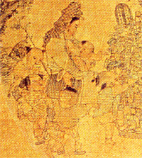
宋代还专设
"校正医书局"
，集中了一批著名医学家及其他学者，有计划地对历代重要医籍进行搜集、整理、考证、校勘。很多医籍如
《素问》、《神农本草经》、《脉经》、《甲乙经》
都是经此次校订、刊行后流传下来的。此外对著名医籍又进行了大量研究工作，例如
《黄帝内经》、《伤寒论》
等注释也相继出版，对当时医学发展非常重要。
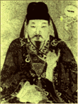
元代皇家厨师
忽思慧
，于1330年撰
《饮膳正要》
一书。从健康人的实际饮食需要出发，以正常人膳食标准立论，制定了一般饮食卫生法则。图文并茂，为中国第一部完整的饮食卫生与食治疗法的专书。也是一部古代有价值的
食谱
。他特别提倡中庸之道，认为
饮食要平均配合，不可过量
。
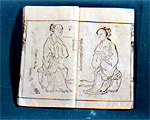
明代有很多名医，并出版了非常多的著作，对于中医药的发展贡献很大
。这时期医家们仍旧沿袭先前医学经典继续发展，继承金元时代医家们提出的医学主张，明代也出现不同学术流派，各家互相激烈争论。当时主要分为
滋阴、温补
以及明末出现的
温病学派
。
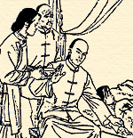
晚清时期，虽然中医面对西方医学严峻的考验，医家们继续拥护
《伤寒论》、"寒凉派"、《神农本草经》
以及其他传统中医理论，中医学仍旧受到普遍支持。王士雄(1808-66)，终其一生研究温病，撰写《温热经纬》一书。柳宝诒(1842-1901)的
《温热逢源》
及雷丰之《时病论》(1882)仍然对温病学的发展有一定贡献。
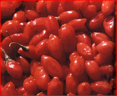
从50年代开始，我国政府有计划有组织地加强中药的生产与供应，
成立国家中药材总公司
。鼓励各地查清本地中草药资源，有计划种植及采集中草药。此外，又对很多
名贵中药进行人工试种试养，都取得良好成绩
。
中医指中国传统医学
，它承载着中国古代人民同疾病作斗争的经验和理论知识。是我国一项民族文化遗产。它是在古代朴素的唯物论和自发的辨证法思想指导下，
通过长期医疗实践逐步形成并发展为独特的医学理论体系
。
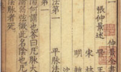
黄帝与炎帝(神农)
传说中的中医药始祖。
扁鹊
中国第一位正式传记的医家，创立了中医诊断基础。
华佗
开创中药麻醉法，提倡体育疗法(导引除病)，创立五禽戏。
张仲景《伤寒杂病论》
确立了「辨证论治」原则。亦即现今流传的《伤寒论》及《金匮要略》。
李时珍《本草纲目》
总结了16世纪前的中草药经验与知识。
网站搜索
疑难杂症
癌症肿瘤
病毒性肝炎
肝硬化
脂肪肝
酒精肝
肝腹水
痛风
甲亢
糖尿病
癫痫
失眠
面瘫
偏头痛
抑郁症
更年期综合症
面肌痉挛
三叉神经痛
重症肌无力
神经衰弱
脊髓空洞症
白内障
青光眼
黄斑变性
眼底病变
黄斑裂孔
眼底出血
视神经萎缩
玻璃体浑浊
视网膜色素变性
心肌炎
白塞氏病
红斑狼疮
干燥综合征
硬皮病
风湿类风湿
坐骨神经痛
股骨头坏死
骨髓炎
腰椎间盘突出
强直性脊柱炎
颈椎病
间质性肺炎
慢性结肠炎
慢性胃溃疡